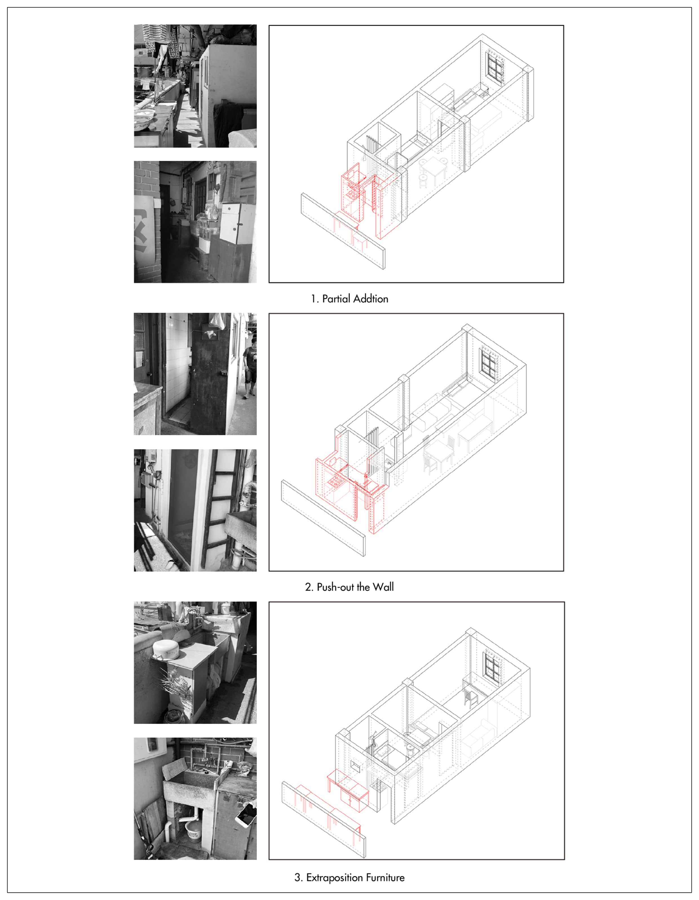
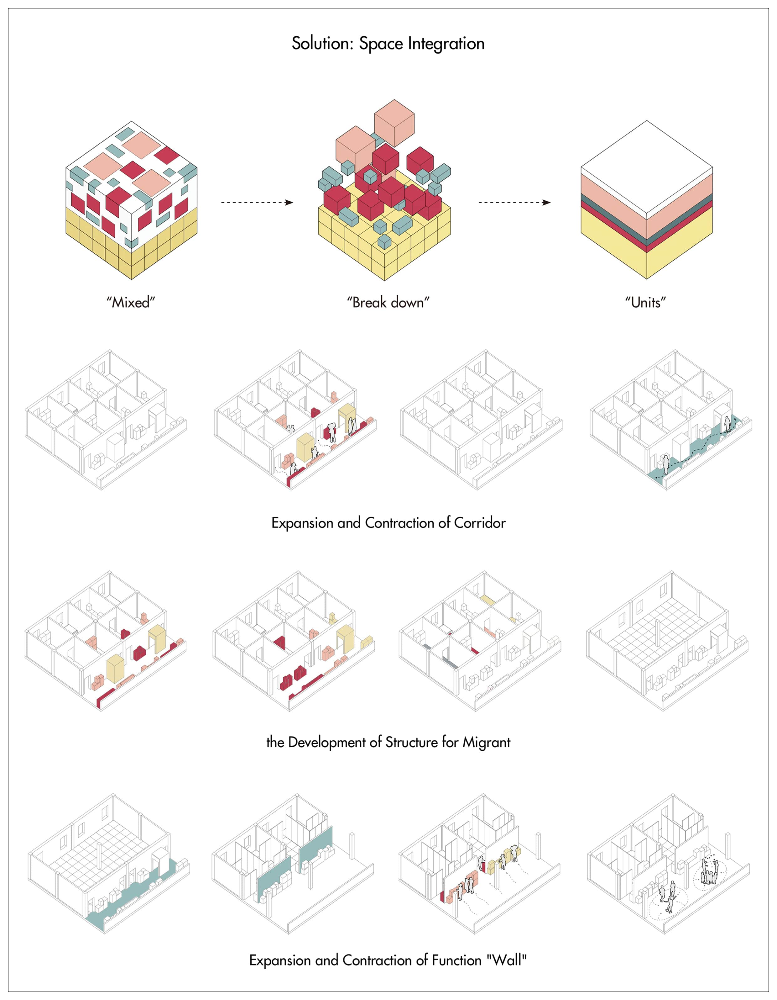
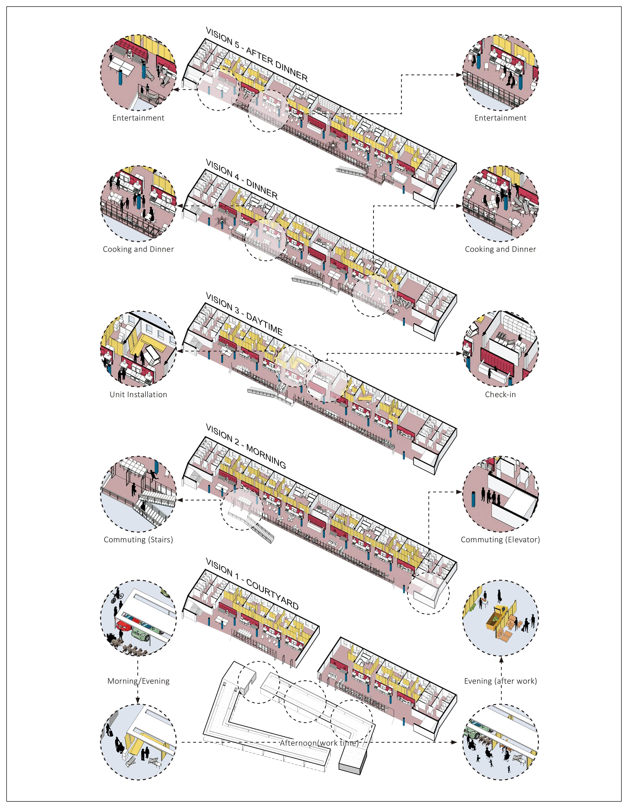
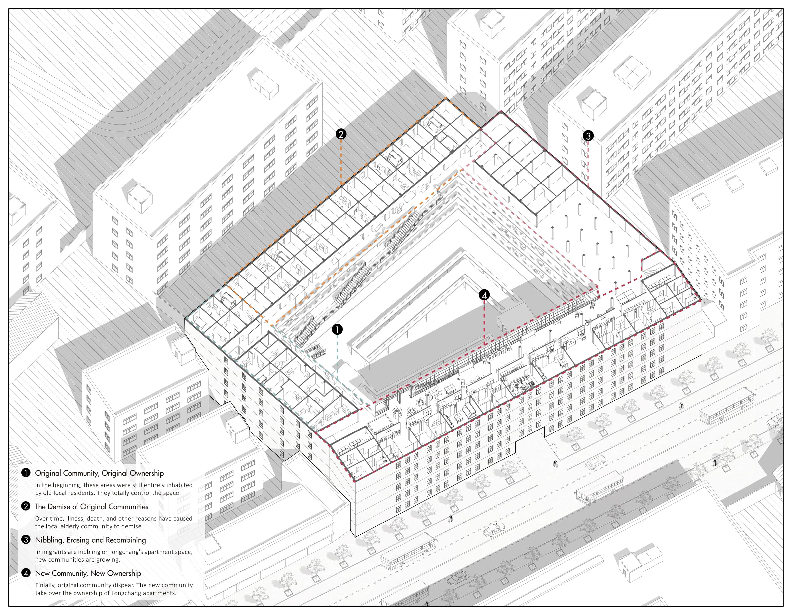

Folding Longchang
2017 Fall Semester, Year 3
Renovation of Old Apartment
Individual Work
For More Details: https://issuu.com/hanwenxu721/docs/_2016-2020

The project "Folding Longchang" show work with subtle tragic overtones. Shanghai, the symbol of China's modernization and urbanization, is sucking in labour from all over China as its fuel. Farmers from Anhui, Henan and northern Jiangsu provinces have come to this metropolis and become labourers. However, the strict hukou system and the uneven distribution of public resources make settling in Shanghai an unrealistic goal for them. The most realistic strategy for these workers is to consider Shanghai a factory to work in and then return hometown to start a "real" life after saving enough money.
Under such a realistic logic, this project chooses Longchang Apartment as the object for renovation, which aims to create a new type of collective living for the migrants to resist the pressure of the metropolis.
 Fig. 1. Longchang Apartment: from Classy Dormitory to Decay Housing
Fig. 1. Longchang Apartment: from Classy Dormitory to Decay Housing
In its early days, Longchang Apartment was Shanghai's most modern high-rise apartment. While one hundred years later, the living conditions of this apartment have become worse and worse. Only elders stay because of deep feelings for "home". Furthermore, bruising tensions form between migrant workers (who are attracted by cheap rents here) and old residents because of cultural differences.
 Fig. 2. Facade: the Encroachment on Public Space
Fig. 2. Facade: the Encroachment on Public Space
The lack of space makes the living condition to become worse. Residents have no choice but to occupy the corridor to put more things, which leads to many problems like the encroachment of public space, the confusion of property rights and the degradation of the visual quality. However, in some cases, it also has a positive aspect. It is a flexible way of using space.
 Fig. 3. Strategies Used by Residents to Increase Space
 Fig. 4. Space Integration
Based on such a space logic, a flexible living form emerged. According to rent on the standard sleeping unit and paying for extra furniture, migrant workers could keep the cost of living as low as possible. The introduction manual below explains how flexible units could be installed and adapted to different living needs.
Fig. 5. The Guide of Living in Longchang Apartment
This new form of collective living shows a different scene from everyday life. The group of migrant workers build a dense and flexible community.
 Fig. 6. New Longchang: Scenes from Everyday Life
The project also envisages future changes in "ownership" over time. Initially, these areas were still entirely inhabited by old locals. They control the whole space of the apartment. Over time, illness, death, and other reasons have caused the local elderly community to demise. Immigrants are nibbling on Longchang's apartment space, and new communities are growing. Finally, the original community (the elders) disappeared. The new community of migrants take over the ownership of Longchang apartments. In such a process, Longchang apartment still exists, while the kernel has been replaced into a form suitable for contemporary metropolitan life.
 Fig. 7. New Longchang: Scenes from Everyday Life